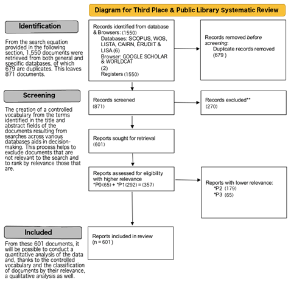

Bloque 5 Síntesis, organización y escritura
Nota: Este bloque forma parte del material completo del curso pero no se imparte en todas las ediciones. Está diseñado para ser trabajado de forma autónoma o en sesiones específicas sobre metodología de revisiones bibliográficas.
5.1 El modelo PRISMA
PRISMA (Preferred Reporting Items for Systematic Reviews and Meta-Analyses) es el estándar más extendido para reportar revisiones sistemáticas. No es un protocolo de investigación en sí mismo, sino una guía de reporte: establece qué información debe incluirse en el manuscrito para que la revisión sea transparente y reproducible.
La versión vigente es PRISMA 2020, que actualizó la versión de 2009 para incorporar los cambios en las prácticas de revisión sistemática, incluyendo la búsqueda en registros de preprints y el uso de herramientas automatizadas.
5.1.1 El diagrama de flujo PRISMA
El elemento más reconocible de PRISMA es su diagrama de flujo, que documenta el proceso de identificación, cribado y selección de estudios:

Los recuentos para completar este diagrama se obtienen directamente del proceso documentado en Zotero.
5.1.2 Protocolo de trabajo previo
Para una revisión sistemática rigurosa, el protocolo debe definirse antes de realizar la búsqueda, no después. Esto incluye:
- Pregunta de investigación (en formato PICo u otro marco estructurado)
- Criterios de elegibilidad (inclusión y exclusión)
- Fuentes de información y estrategia de búsqueda
- Proceso de selección de estudios (número de revisores, manejo de discrepancias)
- Proceso de extracción de datos
- Evaluación del riesgo de sesgo
5.2 Proceso de lectura
5.2.1 Lectura en dos velocidades
No todos los artículos de un corpus merecen el mismo nivel de atención. Una gestión eficiente del tiempo de lectura implica distinguir:
| Lectura de cribado | Lectura profunda |
|---|---|
| Título, abstract y conclusiones | Texto completo, incluyendo metodología, resultados y discusión |
| Objetivo: decidir si el artículo es relevante para la pregunta de investigación | Objetivo: extraer datos, evaluar calidad metodológica, comprender argumentos - Reservada para los artículos que superan el cribado |
| Tiempo estimado: 2-5 minutos por artículo | Tiempo estimado: 30-90 minutos por artículo |
El análisis con NotebookLM y VOSviewer (Bloques 3 y 4) ayuda a priorizar qué artículos merecen lectura profunda y cuáles pueden quedar en lectura de cribado.
5.2.2 Toma de notas
Una buena toma de notas durante la lectura profunda es la base de una síntesis de calidad. Algunos principios:
- Tomar notas en tus propias palabras, no copiando frases del artículo
- Registrar siempre la referencia completa junto a cada nota
- Distinguir entre lo que dice el autor y tu propia interpretación
- Anotar preguntas y dudas que surjan durante la lectura
- Registrar las limitaciones que el propio autor reconoce
Herramientas útiles:
Zotero permite añadir notas a cada referencia, lo que mantiene todo centralizado
NotebookLM permite construir notas acumulativas vinculadas al corpus (véase Bloque 3)
Una hoja de extracción de datos (en Excel o Google Sheets) para sistematizar la información entre artículos
5.3 Estructuras posibles para la revisión
No existe una única estructura correcta para una revisión bibliográfica. La estructura debe estar al servicio de la pregunta y del tipo de revisión. Algunas opciones habituales:
5.3.1 Estructura temática
Organiza la revisión en secciones correspondientes a los grandes temas o subtemas identificados en el corpus. Es la más habitual en revisiones narrativas y en revisiones sistemáticas con síntesis narrativa.
Cuándo usarla: cuando el objetivo es mapear la diversidad temática del campo. Los clusters de VOSviewer y las agrupaciones de NotebookLM pueden ser un buen punto de partida para definir las secciones.
5.3.2 Estructura cronológica
Organiza la revisión siguiendo la evolución histórica del campo. Útil para mostrar cómo ha cambiado la comprensión de un fenómeno o cómo han evolucionado los debates.
Cuándo usarla: cuando el objetivo es mostrar el desarrollo histórico de un campo o cuando hay un punto de inflexión claro (un evento, una publicación seminal, un cambio de paradigma) que estructura la narrativa.
5.3.3 Estructura metodológica
Organiza la revisión según los enfoques metodológicos de los estudios incluidos (cuantitativos, cualitativos, mixtos; experimentales, observacionales, etc.).
Cuándo usarla: cuando el objetivo es evaluar críticamente cómo se ha estudiado un fenómeno, no solo qué se ha encontrado.
5.3.4 Estructura por pregunta o hipótesis
Organiza la revisión en torno a las subpreguntas que componen la pregunta de investigación principal, respondiendo cada una en una sección.
Cuándo usarla: en revisiones sistemáticas con preguntas bien delimitadas.
5.3.5 Un ejemplo de revisión asistida por IA
Robinson-Garcia, N., van Schalkwyk, F., Tirado, M. M., Pham, V., & Melkers, J. (2024). What’s in a team? Variability and discrepancies in the conceptualization and operationalization of scientific teams (Versión 1). 28th International Conference on Science, Technology and Innovation Indicators (STI 2024), Berlin. Zenodo. https://doi.org/10.5281/zenodo.12726921
En este trabajo de congreso, queríamos analizar qué se entiende por equipo científico en la literatura de evaluación de la ciencia y cienciometría. Para ello, seguimos la siguiente estrategia
Selección del corpus. Hicimos dos búsquedas en WoS:
- En la primera buscábamos sólo revisiones sobre equipos científicos
- En la segunda buscábamos artículos pero sólo publicados en la revista Research Evaluation. A partir de los resultados, identificamos los estudios más co-citados (al menos 3 co-citas), lo que nos redujo el set de datos a 46 publicaciones.
Tres investigadores revisamos de forma independiente y manual buscando definiciones explícitas de equipo científico, reduciendo el corpus final a 26 publicaciones.
Codificación manual. Antes de recurrir al LLM, codificamos manualmente cada publicación en busca de definiciones y atributos de los equipos científicos. Este proceso por múltiples codificadores permitió contrastar después los resultados con los del modelo.
Uso de GPT-4. Sobre ese corpus de 26 estudios, utilizamos GPT-4 para tres tareas acotadas por documento:
- Evaluar el nivel de acuerdo con la codificación manual.
- Extraer la definición explícita de equipo con indicación de página
- Inferir los atributos esenciales que debe tener un equipo científico.
Tras el análisis individual, lanzamos un análisis global para formular una definición unificada e identificar atributos comunes y discrepancias.
Tres aspectos de este uso merecen atención:
- Supervisión explícita. El proceso fue supervisado en todo momento y las respuestas del modelo fueron corregidas cuando fue necesario.
- Transparencia total. La conversación completa con ChatGPT fue publicada y está disponible públicamente, haciendo el proceso replicable.
- Uso acotado. El LLM no redactó ni sintetizó de forma autónoma: se usó como herramienta de extracción y codificación asistida sobre un corpus previamente seleccionado y revisado.
Este ejemplo ilustra la distinción entre usar un LLM como asistente de análisis — con tareas definidas, supervisión constante y reporte transparente — y usarlo como sustituto del análisis. El valor añadido del investigador está en el diseño del proceso, la supervisión y la interpretación final.
5.4 Errores típicos
5.4.1 Errores de estructura y enfoque
- El “laundry list”: enumerar estudios uno tras otro sin síntesis ni argumento. La revisión no es un catálogo; es una argumentación.
- Ausencia de hilo conductor: el lector no entiende qué pregunta responde la revisión ni cómo cada sección contribuye a responderla.
- Desequilibrio entre descripción y análisis: dedicar demasiado espacio a describir qué dice cada estudio y poco a analizarlo críticamente.
5.4.2 Errores de selección y cobertura
- Sesgo de confirmación: seleccionar preferentemente estudios que apoyan la posición del autor.
- Descuidar literatura contradictoria: omitir estudios que ofrecen resultados o interpretaciones contrarias a la conclusión principal.
- Cobertura temporal desactualizada: no incluir literatura reciente relevante.
- Sesgo lingüístico: incluir solo literatura en inglés cuando existe literatura relevante en otros idiomas.
5.4.3 Errores de síntesis
- Generalizar en exceso: extraer conclusiones más amplias de lo que la evidencia revisada permite.
- Ignorar el contexto: presentar hallazgos de contextos muy específicos como si fueran universales.
- No evaluar la calidad metodológica: tratar todos los estudios como equivalentes independientemente de su rigor.
5.5 El proceso de escritura
5.5.1 Escribir antes de “tener todo”
Un error frecuente es esperar a haber leído todo el corpus para empezar a escribir. La escritura es también un proceso de clarificación del pensamiento. Algunas estrategias:
- Escribir resúmenes de cada artículo inmediatamente después de leerlo, mientras está fresco
- Escribir borradores de sección aunque estén incompletos — se pueden rellenar después
- Usar las notas de NotebookLM como punto de partida para el borrador
5.5.2 El papel de los LLMs en la escritura
Los LLMs pueden ser útiles en varias fases del proceso de escritura:
Útil: - Mejorar la redacción y claridad de párrafos ya escritos - Sugerir alternativas de formulación para ideas propias - Detectar inconsistencias o falta de claridad en la argumentación - Revisar la coherencia lógica entre secciones
No adecuado: - Generar el texto de síntesis directamente (el conocimiento sobre el corpus es del investigador, no del modelo) - Sustituir el análisis crítico propio - Redactar la discusión o las conclusiones sin control exhaustivo del investigador
5.5.3 Revisión y cierre
Antes de considerar un borrador terminado, conviene revisar explícitamente:
- ¿Cada sección responde a la pregunta de investigación o se desvía?
- ¿Las conclusiones están sustentadas por la evidencia presentada?
- ¿Se han reconocido las limitaciones de la propia revisión?
- ¿El diagrama PRISMA es coherente con el texto?
- ¿Todas las referencias citadas en el texto están en la bibliografía y viceversa?
5.6 Consejos finales
- Una revisión es un argumento, no un resumen. El valor está en lo que tú aportas al interpretar y sintetizar la literatura, no en la cantidad de artículos citados.
- La transparencia metodológica es parte de la calidad. Documentar el proceso (incluyendo las herramientas usadas y cómo se usaron) no es burocracia — es rigor.
- Las herramientas cambian, los principios no. NotebookLM, VOSviewer y Zotero son herramientas del momento. Los principios de una buena pregunta de investigación, una búsqueda transparente y una síntesis crítica son más duraderos.
- Compartir el protocolo antes de empezar — aunque sea en un documento de trabajo interno — obliga a pensar con claridad sobre qué se quiere hacer y protege frente a la deriva durante el proceso.